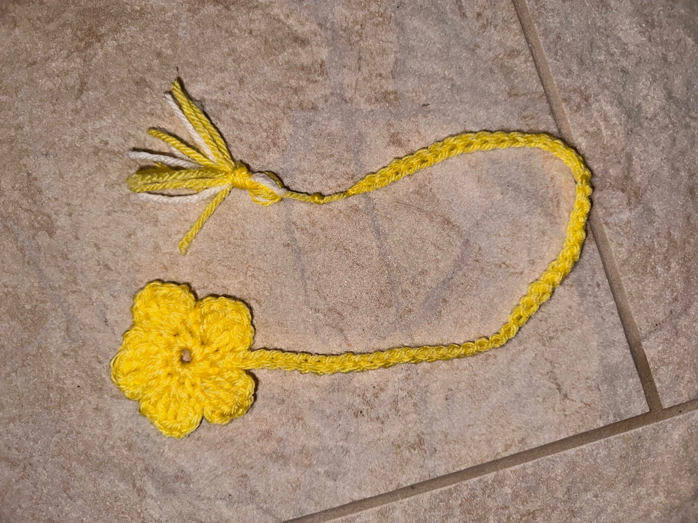
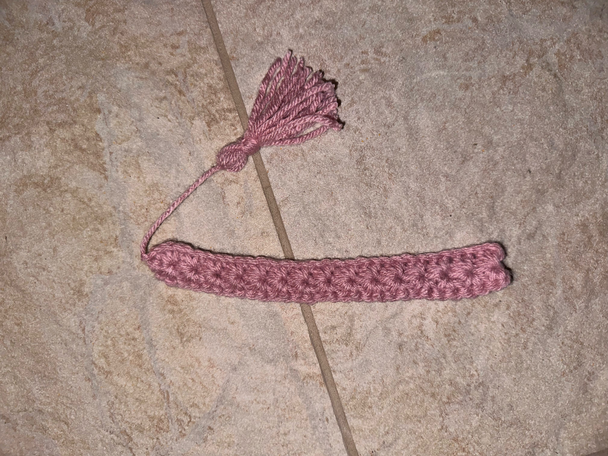

Small Patterns


- Yarn
- a size 3-4 yarn is ideal
- crochet hook
- a size your yarn suggests works best
- scissors
- measuring tape
Pink Bookmark
chain 25, turn
sc, chain 2, sk1, sc, repeat to end
3 sc in each ch 2 space until end of row
chain 20 for tail
cut some yarn for end of tail.